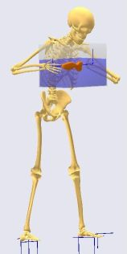
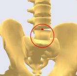
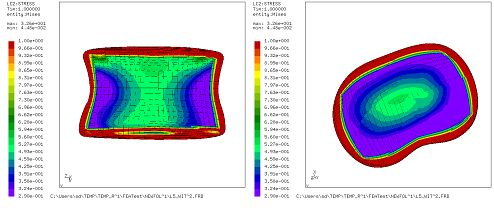
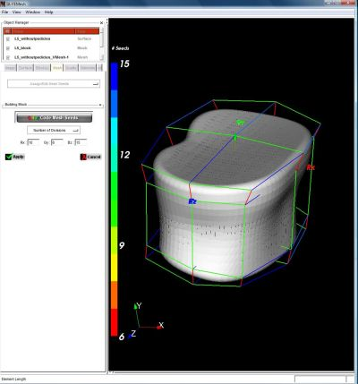
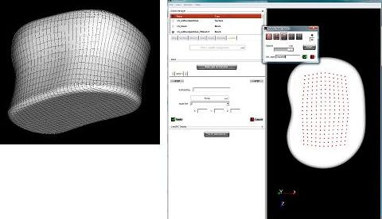

Lesson 1: Export of data for FEA¶

In this example we want to shed some light on an important issue for all aquarium owners: What’s the magnitude of stress in the lumbar vertebra L5 during lifting of a 10 kg aquarium?
First we need a model to work on.
With the AnyBody Modeling System you already have a repository of models available, for details please see the AnyBody Assistant available from the menu. This tutorial has been written using the AnyBody Managed Model Repository Ver. 1.6 (AMMRV1.6) if you see differences between the tutorial text and your own results please download AMMRV1.6 from www.anybodytech.com/anybody.html?fwd=modelrepository
The starting point for this tutorial is the model:
Applications/Examples/StandingLift/StandingLiftFEA.main.any
However, this model internally reuses the code of StandingLift.main.any. Please
find the model and load it by pushing F7 and open a Model View. You
should see something similar to the picture to the right. The vertebral
body we want to analyze is marked with a circle on the zoomed-in
picture.

As mentioned before this model is based on the “StandingLift” model of the AMMR Repository. It is a full body model lifting a box of 10 kg and therefore also imposing forces on the spine. In this tutorial we will be using a more basic representation of the L5 vertebra than the one included in the repository model. Our tutorial model lacks the pedicles and facets joints, consisting just of the vertebral body. This is done in order to simplify the FEA related processes which will be discussed later.
Another simplification will be that we only use the model with joint generating muscles; this will keep the force output files small.
#ifdef FEA_OUTPUT
// switch the muscles off for simplicity
#define BM_LEG_MUSCLES_BOTH _MUSCLES_NONE_
#define BM_ARM_MUSCLES_BOTH _MUSCLES_NONE_
#define BM_TRUNK_MUSCLES _MUSCLES_NONE_
#endif
In order to export the forces acting on the vertebra we had to include the output function. This modification can be found inside of the Study folder of the main file:
#ifndef FEA_OUTPUT
// default values for the StandingLift example
tEnd = 1.0;
nStep = 30;
#else
// single step for the StandingLiftFEA example
tStart = 0.5;
tEnd = 0.5;
nStep = 1;
AnyMechOutputFileForceExport ForceOutput =
{
FileName = "Output/ForceL5.txt";
/*NumberFormat =
{
Digits = 15;
Width = 22;
Style = ScientificNumber;
FormatStr = "";
};*/
AllSegmentsInStudyOnOff = Off;
AnySeg &L5Seg = Main.HumanModel.BodyModel.Trunk.SegmentsLumbar.L5Seg;
};
#endif
The AllSegmentsInStudyOnOff switch decides if only the forces of the listed segments will be exported or data from all segments in the study. Usually you will only use a selected amount of data to keep the file manageable. The following segment points to the L5 segment which is the one we like to analyze. You can fill in the path by browsing the Model tab to the L5 segment, right-click it and choose “Insert Object Name” in the drop down menu.
That’s all you have to do for the force export. Please reload the model by pressing F7. Open the Study tree in the Operation tab in the left side of the main window and choose “InverseDynamicsAnalysis”. Press the “Run” button. The model will analyze one timestep and write the FEAoutput.txt file which we have specified before. Let’s have a closer look on the Output file. It is located inside your Application folder in the Output subfolder. You can open it either directly in AnyBody or in any text editor of your choice.
Environment:
ReferenceFrame=Global Model Frame;
Gravity=0.000000000000000e+000;-9.810000000000001e+000;0.000000000000000e+000;
Segments(1):
Segment[0]=Main.HumanModel.BodyModel.Trunk.SegmentsLumbar.L5Seg;
TimeSamples:
===================== Start of time-step =====================
TimeSample[0]:
t=5.000000000000000e-001;
Segment[0]:
Name=Main.HumanModel.BodyModel.Trunk.SegmentsLumbar.L5Seg;
m=2.085000000000000e+000;
Jmatrix=1.168885000000000e-003,-9.570149999999998e-004,0.000000000000000e+000;
9.570149999999998e-004,6.423084999999999e-003,0.000000000000000e+000;0.000000000000000e+000,0.000000000000000e+000,6.591969999999999e-003;
rCoM=9.304468810912125e-003;1.152365939883446e+000;-2.512564662125113e-004;
r=-4.169135847448037e-002;1.143342897337054e+000;-1.497543262871901e-004;
Axes=9.999998595357809e-001,-4.628389924807490e-004,-2.582798583545108e-004;4.660838626013818e-004,9.999191410444162e-001,1.270803442038980e-002;2.523772002673721e-004,-1.270815301543968e-002,9.999192163133404e-001;
rDot=5.402776176443577e-003;2.261042200066284e-004;1.171200924865143e-004;
Omega=9.939274896600235e-003;2.020125288690530e-004;-5.443536252847692e-003;
rDDot=4.170565551642487e-003;1.189711201114273e-004;-3.295768681950899e-003;
OmegaDot=-2.796914968367631e-001;-5.738778418435273e-003;-4.224839525429824e-003;
Forces(17):
Force[0]:
Name=Main.HumanModel.BodyModel.Trunk.JointMuscles.L5SacrumJnt.Extension.dof0.Muscle.PosMuscle;
Class=AnyMainFolder.AnyFolder.AnyFolder.AnyFolder.AnyFolder.AnyFolder.AnyFolder.AnyFolder.AnyFolder.AnyGeneralMuscle;
SegmentName=Main.HumanModel.BodyModel.Trunk.SegmentsLumbar.L5Seg;
SegmentID=0;
Pos=1.310949680520611e-003;1.138363343237923e+000;-7.536134159849472e-005;
RefFrame=Main.HumanModel.BodyModel.Trunk.SegmentsLumbar.L5Seg.L5SacrumJntNode;
Components(1):
F[0]=0.000000000000000e+000;0.000000000000000e+000;0.000000000000000e+000;
M[0]=-7.751477527937135e-003;2.185362573696517e-001;7.232168716222537e+001;
...
It starts with information on the included segment. All the
geometrical entries are listed. One nice feature here is that all
coordinates stated in this file are given in the same (global)
coordinate system. In the following all forces acting on the segment
are listed. In this case one of the artificial joint moment generating
muscles is shown. The position of the force is given as well as all of
its components from AnyBody. Depending on the nature of the underlying
AnyForce class, which you can see in the “Class” entry, there are a
different number of forces and moments listed. An AnyForce may have
any number of components, which may be a physical force or a torque,
but it may also be a more generalized load, not measured in Newton or
Newton-meter. Basically these force components are related to the
underlying kinematic measure, so that force times kinematic
displacement becomes work/energy; in other words the kinematic measure
decides the unit of the force component. Anyway, these occasionally
somewhat artificial force measures present in the AnyBody model are
converted to real point forces and point torques, when outputted to
the AnyFE output file. Therefore, we find F[i] and M[i] in the AnyFE,
which are the point force and the point torque associated the i’th
component of the given AnyForce object. The total force acting in the
global direction at a point can be found by simply adding all the
components forces, i.e. summing F[i] for all i at that location.
In many cases, the components are indeed simple such that component i=0
for instance is Fx as could be expected, but since this Fx may refer to
a local coordinate system of a particular segment, a joint attachment
node, or the like, F[i] and M[i] may still have three non-zero values
when exported to the AnyFE file. This is because the data is tansformed
while being exported so that the AnyFE is referring to a single
coordinate system for all of the exported data; this system is often (by
default) the global coordinate system or it can be a local coordinate
system.
Let us have a look at the following entry which basically gives the joint constraints in the L5-Sacrum joint:
Force[12]:
Name=Main.HumanModel.BodyModel.Trunk.JointsLumbar.L5SacrumJnt.Constraints.Reaction;
Class=AnyMainFolder.AnyFolder.AnyFolder.AnyFolder.AnyFolder.AnySphericalJoint.AnyKinEq.AnyReacForce;
SegmentName=Main.HumanModel.BodyModel.Trunk.SegmentsLumbar.L5Seg;
SegmentID=0;
Pos=1.310949680520611e-003;1.138363343237923e+000;-7.536134159849472e-005;
RefFrame=Main.HumanModel.BodyModel.Trunk.SegmentsLumbar.L5Seg.L5SacrumJntNode;
Components(3):
F[0]=1.438514108411654e+001;4.422244295289277e-001;2.055265396354515e-004;
M[0]=-4.993754918704412e-017;-4.993754918704412e-017;-4.993754918704412e-017;
F[1]=-1.447931608403369e+001;4.709990755658955e+002;-1.424781629621639e+000;
M[1]=1.926516762214523e-017;1.926516762214523e-017;1.926516762214523e-017;
F[2]=-1.526868368696591e-004;4.304677367488389e-003;1.424576103082109e+000;
M[2]=4.217476399426685e-020;4.217476399426685e-020;4.217476399426685e-020;
You can see the three moments have practically zero values. This is due to the fact that this joint is discretized as a spherical joint which therefore cannot take up moments. In the same manner all other joints are handled.
Next we need an object where we can apply our exported forces. This is
also quite simple. A facility is built in the system (from Version
3.1) which allows the export of all .anysurf and .stl geometries from
your application in the .stl format. The function will export the
geometry in its actual position, so please make sure that your model
has not been reloaded since the force export otherwise run the
InverseDynamicAnalysis again to bring it to right position. Of course
it also involves all scaling which has been applied to the bones.
Browse through the model tree to the L5Seg
Main/HumanModel/BodyModel/Trunk.SegmentsLumbar/L5Seg in order
to export the L5 segment. Inside this folder you find the DrawSTL
folder. Right-click the folder and choose “Export Surface”. Choose a
convenient place to store the file and give it the name “L5.stl”. A
dialog box will appear which allows you to specify a scale value for
the output file. The scaling can be useful to switch from one units
system to another. In our case we have m as units in the AMS, but want
to have mm for the FE geometry. So choose as scale factor 1000. From
the AnyBody point of view, that’s all we have to do. Please note that
not all bones which are right now in the Repository may be suitable
for a FEA. As the main intention is to have graphical representation
of the body it may appear that some bone are simply to coarse for a
detailed analysis. But of course you are free to import your own .stl
file into the AnyBody Modeling System to substitute existing bones.
You will have to tweak your CAD file a bit in order to make it fit.
Donation of better quality CAD files of bones to the models is most
welcome.
Based on the exported forces and .stl file we can now build and analyze
a FE model. Below we shall build an FE model applying the loads and
other boundary conditions manually using non-commercially available
software. However please notice that in the following lessons, we
consider more smooth integration with selected commercial software by
means of small converter software tools provided by AnyBody Technology.
These tools automatically convert the AnyFE output file from AnyBody to
input files for the particular FE software.
The following section will show some results that were achieved using previous versions of the AMMR.
After building a FE model based on this data the internal stress in the bone tissue can be evaluated. Below are some von-Mises stress plots showing approximately the middle cross section of the vertebral body.

With a stress level of approx. 0.5 MPa in the cancellous bone we are pretty far away from the yield strength, so we can conclude that it appears to be ok for aquarium owners to lift their pets in an aquarium of this size. But of course we did some generous shortcuts to achieve this goal and neglected a lot of detail which is provided by the AnyBody Modeling System.
Building the FE-model¶
In this section a short description of how to build a Finite Element model using AnyBody data is given. If you are an experienced FE user you may want to skip this section.
As this should be by no means a Finite Element tutorial we will use some shortcuts to achieve our goal: We already restricted the analyses to one time step. Further, we will only take the joint reaction forces into account. How one can handle muscle forces will be discussed below. And finally the used geometry was simplified. Basically only the vertebral body is used. The main reason for this is to avoid getting lost in the jungle of meshing.
In the following, we will make use of two freely available tools. Preprocessing (meshing and applying boundary conditions) is done using IA-FEMesh provided by the University of Iowa. Calculix is used as solver and post-processor. This fine piece of software is written and maintained by Guido Dhondt and Klaus Wittig. Calculix v1.8 and IA-FEMesh v1.0 are used in this tutorial. So things may slightly change with updates on the programs. Please note that neither of these programs is in related to AnyBody Technology.
Please follow the links shown above, download and install the two programs if you want to do some hands-on FEA.
Building the model - preprocessing¶
A file with the finished model is provided below, in case you do not want to go through the entire model building process.
- Open IA-FEMesh and press the “Surface” tab to load your (earlier
exported)
.stlfile. After successful loading we have to define a building block. The building block is a prerequisite to the mesh generation and its surfaces will be meshed and further projected on the bone. For reasons of simplicity it has been prepared. Please press the “Block” tab and chose “Load”. Browse to the folder “FEA” which is inside the “StandingLiftFE” application folder. Choose the fileL5_block.vtk. Some boxes around the vertebral body will appear.

In the next step, we will have a look at the local mesh density and mesh the structure.
Press the “Mesh” tab and choose “Assign/Edit Mesh Seeds”. By activating the “Color Code Mesh Seeds” you can review the settings for the mesh density which was set in the predefined block. Just click on the different wireframes and see the number of divisions per line. The density is slightly increased in the regions of the vertebral endplates.
Next is to generate the actual mesh. Open again the “Mesh” tab and press “Create”. Fill in “n” for node label and “e” for element label, make sure that the volumetric mesh is chosen and the “perform smoothing” option is checked. “Apply” will generate a nicely meshed vertebral body (right)
After this we have to assign material properties to the elements. Go to the “Materials” tab and select “User-Defined”. You can simply give in the Young’s modulus for the whole set of elements and the Poisson’s ratio. Reasonable values may be an average 1000 (MPa) for the modulus and 0.3 for the ratio. But of course you may also want to model the bone in more detail, separating the cortical shell and the cancellous bone or even base the material properties on density data. But this is surely not within the scope of this tutorial.
In this example we will apply only the joint forces on the endplates. Therefore we will not make explicit use of all the information given by the AnyBody force export file. 
We have to select two node sets to apply the boundary condition. This is done by pressing the “Load/BC” tab and the “STEP-Load/BC Assignments” choose “Node Set Definition” and use the appearing tools to define the node sets on both endplates. You should use the option “Visible surface nodes” and the + and – tool to select the set. You have to hold the Ctrl button to select nodes and confirm your selection by right clicking on the selected nodes. (In this case it is a rather good approximation to select just a set of nodes on the endplates as force application points. This may not be so easy for other cases; in these the given information on the coordinates of the forces is essential to apply the force in the right way.)
After the definition of a node set on both endplates we have to provide the boundary conditions. For this we need our force export file. Please open the file (it should be located in your StandingLiftFEA application folder) in an editor and scroll down to Force[12]. This force is the joint reaction on the L5-Sacrum joint.
Force[12]:
Name=Main.HumanModel.BodyModel.Trunk.JointsLumbar.L5SacrumJnt.Constraints.Reaction;
Class=AnyMainFolder.AnyFolder.AnyFolder.AnyFolder.AnyFolder.AnySphericalJoint.AnyKinEq.AnyReacForce;
SegmentName=Main.HumanModel.BodyModel.Trunk.SegmentsLumbar.L5Seg;
SegmentID=0;
Pos=1.310949680520611e-003;1.138363343237923e+000;-7.536134159849472e-005;
RefFrame=Main.HumanModel.BodyModel.Trunk.SegmentsLumbar.L5Seg.L5SacrumJntNode;
Components(3):
F[0]=1.438514108411654e+001;4.422244295289277e-001;2.055265396354515e-004;
M[0]=-4.993754918704412e-017;-4.993754918704412e-017;-4.993754918704412e-017;
F[1]=-1.447931608403369e+001;4.709990755658955e+002;-1.424781629621639e+000;
M[1]=1.926516762214523e-017;1.926516762214523e-017;1.926516762214523e-017;
F[2]=-1.526868368696591e-004;4.304677367488389e-003;1.424576103082109e+000;
M[2]=4.217476399426685e-020;4.217476399426685e-020;4.217476399426685e-020;
By summing up the rows for the forces F[0], F[1], and F[2] we get the
resulting components for the joint reaction load. This can be directly
used in the force definition as they are given in the same coordinate
system. In this case only the Y-force component is of interest as all
other forces are pretty small. Choose “Force” and your defined node
set for the lower endplate. Specify the Y-force to 471 (N). Make sure
to confirm with “Apply”. Select the node-set on the opposite endplate
and set the displacement to be 0 in all direction, confirm again with
“Apply”. (Next also the moment generating muscles could be taken into
account in a similar manner, but this will be skipped here.)
The model is now finished. Now we have to export the model. This export can be found under “Load/BC”. Choose “Export ABAQUS File”. This will write an ABAQUS style input file for a FE-Solver. This is the format Calculix can read. Press “Apply” and name the file “L5FEA” and save.
There is one more thing that has to be defined preliminary to the FEA - the desired output. Please open a text editor and load the L5FEA.inp file. In this file the whole analysis is defined, using a reference to the node and elements file.
**=========================================================================
** HISTORY DATA **
**=========================================================================
**------------------------------------------------------------STEP 1
*STEP, INC=100, NLGEOM=YES, UNSYMM=YES
*STATIC
1.0, 1.0
**
*BOUNDARY, OP=NEW
unten, 1, 1, 0
unten, 2, 2, 0
unten, 3, 3, 0
**
*CLOAD
EndplateB, 2, 2.2488
**
**------- Output Requests --->
**
*NODE FILE
U
*EL FILE
S,
**
**
**
*END STEP
Please include the Output Requests (see red lines above). This will make sure we get some results to look at. Save the file and close the editor.
Solve and postprocessing¶
If you have somehow screwed up your model or simply didn’t want to go
through the model building process, you can find a working model here:
StandingLift\Input\FEA\L5FEABackup.inp. (In this model also
different materials for the cortical shell (E = 12000 MPa) and the
cancellous bone structure (E = 200 MPa) have been assigned.
If you want to use this model instead of your own build, please change the following comments involving”L5FEA” to “L5FEABackup”.)
Open up the Calculix command shell and browse to the directory where you placed the L5FEA.inp file. Now type
ccx L5FEA
and press return. This will push the model forward to the solver and start the analysis. Within a few seconds a nice JOB FINISHED should appear. Now, let’s have look at the results: Therefore, type
cgx L5FEA.frd
This will call the Calculix (pre- and) postprocessor. A graphical window showing the vertebrae will appear. Clicking on the left side will give you a panel to visualize the results. First you have to choose the dataset you want to access. For example click on Datasets>Stress to activate the stress dataset. After this you can choose the desired Entry, e.g. Mises Stress. You can assess the results in more detail using different Viewing settings (Please have a look at the Calculix help file for more information on this). Here are two examples for the von-Mises stresses in the middle of the cross section of the vertebral body:
This completes Lesson 1.
In the following lessons, we show somewhat more automatic interfaces to selected commercial FE packages using small interface tools
Click here to continue to
 Fix it your self
Fix it your self